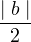

(b, a) ∈ R.
(b, a) ∈ R.
Given a set S, R ⊆ S × S is said to be a Binary Relation. In other words a binary
relation should be a subset of cartesian product of the ground set.
Example: less than or equal to ≤ , divisibility, etc.
S = {1,2,3,4,5,6,7,8}
S × S =
{{1, 1 }, {1, 2}, {1, 3}, {1, 4}, {1, 5}, {1, 6}, {1, 7}, {1, 8},
{2, 1 }, {2, 2}, {2, 3}, {2, 4}, {2, 5}, {2, 6}, {2, 7}, {2, 8},
{3, 1 }, {3, 2}, {3, 3}, {3, 4}, {3, 5}, {3, 6}, {3, 7}, {3, 8},
{4, 1 }, {4, 2}, {4, 3}, {4, 4}, {4, 5}, {4, 6}, {4, 7}, {4, 8},
{5, 1 }, {5, 2}, {5, 3}, {5, 4}, {5, 5}, {5, 6}, {5, 7}, {5, 8},
{6, 1 }, {6, 2}, {6, 3}, {6, 4}, {6, 5}, {6, 6}, {6, 7}, {6, 8},
{7, 1 }, {7, 2}, {7, 3}, {7, 4}, {7, 5}, {7, 6}, {7, 7}, {7, 8},
{8, 1 }, {8, 2}, {8, 3}, {8, 4}, {8, 5}, {8, 6}, {8, 7}, {8, 8}}
If a ≤ b defines a relation on set S × S, then,
(a,b) ← R(≤) ⇐⇒ a ≤ b, and the set containing R is
R(s) = {{1, 1},{1, 2},{1, 3},..., {2,3},..., {5,6},...}.
Let R be the relation that a divides b, then, (a,b) ← R1 ⇐⇒ a ∣ b.
R1 = {{1, 1}, {1, 2}, ... {1, 8},
{2, 2}, {2, 4}, ...
{3, 3}, {3, 6 }, ...
{4, 8}, {5, 5}, {6, 6}, {7, 7}, {8,8}}
For all a, (a, a) ∈ R.
If (a, b) ∈ R (b, a) ∈ R.
If (a, b) ∈ R ∧ (b, a) ∈ R  a = b.
a = b.
If p  q ,Then, � q = � p.
q ,Then, � q = � p.
�(a ∧ b) = ∨.
�(a ∨ b) = ∧.
If (a, b) ∈ R ∧ (b, c) ∈ R -→ (a, c) ∈ R.
A partial order is a binary relation which is reflexive, antisymmetric and transitive. E.g. divisibility (≤) subset containment.
A strict partial order is a binary relation which is irreflexive, antisymmetric and
transitive. E.g. less than (<).
We denote a partial order on a ground set X by (X, < ) where
a < b ⇐⇒ (a, b) ∈ R.
An element a is covered by b in a partial order (X, <)
if ∄ y ∈ X such that a < y < b.
E.g. 3 is covered by 6, but 2 is not covered by 8 under relation | for set
S.
A Hasse diagram for a partial order (X,<) is drawn such that the following conditions are satisfied:
Draw the Hasse diagram for R|, given A = {1,2,3,4,5,6,7,8}.
The hasse diagram is drawn as shown in Figure 1.
A linear order is a partial order (X, <) such that
a < b or b < a ∀ (a, b) ← X × X, a ≠ b.
For a set to be POSET it has to be Reflexive, Antisymmetric and Transitive.
S × S = {{1, 1}, {1, 2}, {1, 3}, ... {n, n}}.
2S = { ϕ, {1}, {2}, ... {n}, {1, 2}, {1, 3}, ... , {1, n}, {2, 3}, ...}
From the power set we found out that:
∀ a where a ∈ 2S. (a, a) ∈ R [As a ⊆ a]
If a ∈ 2S, b ∈ 2S
if (a, b) ∈ R ∧ (b, a) ∈ R.
⇒ a ⊆ b [As a ⊆ b and b ⊆ a]
⇒ a = b
If a,b ∈ 2S
If (a, b) ∈ R ∧ (b, c) ∈ R.
⇒ a ⊆ c
⇒ (a, c) ∈ R
Let S = {1, 2, 3, 4}.
2S = {ϕ, {1}, {2}, {3}, {4}, {1, 2}, {1, 3}, {1, 4}, {2, 3}, {2, 4}, {3, 4}, {1, 2, 3}, {2, 3, 4}, {1, 3, 4}, {1, 2, 3, 4}}.
A relation is defined on the ground set.
≤⊆ (X × X), then this relation is a subset of (X × X).
P≤ ⊆ (2S × 2S). (a, b) where a, b ∈ 2S
Rd = { ({ ϕ}, { ϕ }), ({ ϕ}, { 1}), ({ ϕ}, { 2}), ({ ϕ}, { 3}), ({ ϕ}, { 4}), ... ({ ϕ}, { n}), ({ 1}, { 2}), ({ 1}, { 3}), ({ 1}, { 4}), ... ({ 1}, { n}), ... ({ 1, 2}, { 3, 4}), ({ 1, 2}, { 4, 5}), ... }
Elements of 2S = {{ ϕ}, {1}, {2}, {3}, ... {n }, {1, 1}, {1, 2}, {1, 3}, .. {1, n}, {2, 1}, {2, 2}, ... {2, n}, ... }
For simplicity, Let us consider the set S = {1, 2, 3, 4}.
2S = {{ϕ}, {1}, {2}, {3}, ... {1, 2}, {1, 3}, {1, 4}, {2, 1}, {2, 3} ..., {3, 1}, {3, 2}, ...
{4, 1},... {1, 2, 3}, {2, 3, 4}... {1, 2, 3, 4}, }
(a, b) ∈ Rc ⇐⇒∣ a ∣ < 
Elements of the relation = { ({ϕ}, {1}), ({ϕ}, {2}), ({ϕ}, {3}), ... ({1}, {2, 3}), ({1},
{3, 4}), ({2}, {1, 3}), ({2}, {1, 4}), ..., ({1}, {2, 3, 4}), ({2}, {1, 3, 4}), ... }
Maximal family of the subset of 2S, so that any two elements of the subset are not related. [No two elements of the subset are comparable.]
We define the binary relation of S by the subset relation.
(A, B) ← R if A ⊆ B.
Maximal subset = {{1}, {2}, {3}, {4}}, which is an anti-chain.
{ ϕ, {1}, {1, 2}, {1, 2, 3}, {1, 2, 3, 4}} which is a chain.
Consider a partial order set (X, ≤). Any subset of X is called a chain if any two elements of the subsets are related. Any subset of X is called an anti-chain if any two elements of the subsets are not related
{{ ϕ}, {{1}, {2}, {3}, {4}}, {{1, 2}, {1, 3}, {1, 4}, {2, 3}, {2, 4}, {3, 4}}, {{1, 2, 3}, {1, 2, 4}, {1, 3, 4}, {2, 3, 4}}, {{1, 2, 3, 4}}}
Suppose for contradiction ∣ A ∩ B ∣≥ 2 is true. Therefore, there exists 2 elements
which belongs to both A and C. Since the pair belongs to A, the elements are
not related but at the same time they belongs to C and they should be
related, so this forms a contradiction. If it belongs to C then the elements are
comparable but if it doesn’t belongs to C then the elements are not comparable.
Hence ∣ A ∩ B ∣≤ 1 is true.
A minimal element α of a chain C ⊆ X is that element which satisfies the following, α ≤ x, ∀ x ∈ C.
α | x ⇐⇒ α ≤ x
x | α ⇐⇒ x ≤ α (≤ is a binary relation)
Minimum element of C is { ϕ} Consider the set with the divisibility relation. D = {3,
9, 18, 24, 21, 30}. α ⊂ X. A maximal element α of a chain C ⊆ X is that element
which satisfies the following:
No.
Consider the subset relation where elements are: {A}, {B}, {C}, {A,B,C,P}, {A,B,C,Q} and {A,B,C,R}, The Hasse diagram for this type of relation is K-33 as shown in Figure 2 .
Consider the divisibility relation where elements are: 1, 2, 3, 12, 18 and 30, The Hasse diagram for this type of relation is K-33 as shown in Figure 3 .
Hence we can see that the Hasse diagram can not always be planar.